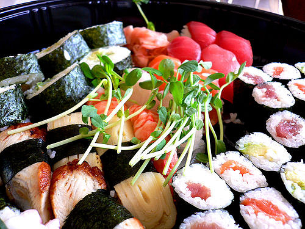

Comida


 Udon (饂飩)
Udon (饂飩)
El Udon es un plato a base de fideos gruesos de harina que se sirven normalmente en caldo dashi (caldo de pescado), salsa de soja y mirin , al cual se le agregan otros ingredientes como cebolla de verdeo y tofu. Hay muchísimas versiones de este plato, y una es más apetitosa que otra.

Onigiri (お握り)
El onigiri es simplemente una bola de arroz rellena con diferentes ingredientes como atún, anguila, salmón o verduras entre otros. Generalmente tienen forma de triangulo u oval, y se las envuelve con alga nori. Es una comida muy sencilla y económica. Si te gusta la comida japonesa.
Ramen (ラーメン)
Este plato es uno de los mas populares de la lista, hasta existe un museo en su honor. El ramen se hace con unos fideos que originalmente llegaron a Japón desde China. El plato contiene un caldo delicioso con raciones de carne de cerdo, huevo, pasta de pescado (Naruto) y varias verduras, entre ellas cebollas, ajo y hasta algas. Es una comida muy nutritiva. En japón, la gente hace largas filas para disfrutar este plato, y las tiendas de ramen más populares suelen quedarse sin ingredientes a las dos horas de haber abierto.
Tenpura (天ぷら)
Este plato es una clásica entrada en restaurantes de sushi. Consiste en frituras de mariscos, kani-kama, carnes o vegetales rebozados en harina. Este plato es al igual que el okonomiyaki, una comida muy “aceptable” par el paladar occidental. El origen de este plato viene de los jesuitas portugueses, que les contaban a los japoneses que ellos comían este tipo de frituras en “Tiempos de cuaresma” (tempora ad quadragesimæ). Desde ese entonces, se cree que la palabra “Tenpura” fue adoptada como nombre del plato accidentalmente.
Sushi (寿司)
Tal vez este sea un plato tan popular como el ramen o quizás un poco más. Aunque en Japón ambos platos se disputan frecuentemente el puesto de el más consumido, el sushi es muy conocido en el mundo entero y seguramente cuando nos hablan de comida japonesa, se nos viene la imagen de este plato. El sushi consiste principalmente en arroz de grano redondo (Gohan), envuelto en alga nori con diferentes ingredientes, dependiendo de la clase de sushi que se haga. Por ejemplo; salmón, atún rojo, kani-kama, huevas, palta, entre otros pescados y vegetales.
Takoyaki (たこ焼き)
El Takoyaki es otro plato originario de la región de Kansai, y uno de las platillos japoneses más consumidos en festivales. Es una especie de croqueta de harina con un trozo de pulpo dentro de la misma. Estas bolitas de pulpo se cocinan en una plancha de hierro con huecos y una vez hechas se les puede agregar una salsa u otros ingredientes a elección del cliente.
Tonkatsu (豚カツ)
El tonkatsu es otro de esos platos que a los occidentales nos puede llegar a gustar mucho. Su sabor e ingredientes son un poco más cercanos a la cocina de nuestro paises, pero no deja de tener ese estilo tan característico de la cocina japonesa. Es por eso que no debes dejar de probarlo si vas a Japón o a algún restaurante de tu país en donde lo sirvan. Este plato es básicamente una milanesa de chuleta de cerdo rebosada en pan rallado japonés y frita. Se la sirve cortada en trozos con arroz o vegetales.
Atrás

Actividades de recreación